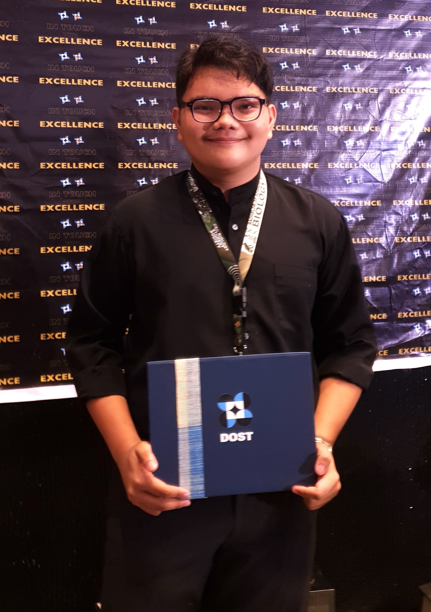

Hi, I am
Remegio Sagarino III
Clinical Systems Technician
My most powerful script is the one I decided to write for myself.

Meet Rem,
A who bridges clinical workflows and data informatics, ensuring the right data reaches the right doctor at the right time—clearly, accurately, and quickly.
He builds, maintains, and troubleshoots
medical technologies and systems that support clinical decision-making. His background includes
automating genomic parsing and strengthening data validation using Python


Education
Bachelor of Science in Biology
Caraga State University - Main Campus
2024
Experience
Link to Résumé >>
Clinical Systems Assistant
Cebu Genomics
2025 – 2029
Skills Used


- Data extraction. Replaced slow, manual entry of genomic data with custom, Python-based scripts for fast parsing and reliable validation.
- Quality control (QC) pipelines. Designed automated QC pipelines to flag and validate low-confidence genomic data, ensuring accurate results.
- Cross-departmental communicator. Served as the translator between clinical and IT staff by ensuring software met real lab requirements.
- Database management. Audited orphaned records, managed secure-data protocols, and engineered BRAP-compliant backups for sensitive bio-information.
- Data privacy. Managed HIPAA-related data privacy by coordinating encrypted transfers of sensitive patient data between departments and hospitals.
Work Samples / Artifacts
LIS Data Automation
Tools: Python, SQL
Flagged and routed records screened for validation issues (e.g., missing fields, formatting errors). Records were categorically organized into pass, correction, and QC review queues, which leveraged individaul judgment without creating a new bottleneck for in-situ data analysis downstream.
Protein Structure Visualization
Tools: Python
Differentiated wild-type and mutated protein structures by aligning sequence/structure data and mapping mutations to regions affecting protein function. Annotations and tree-graph visualizations highlighted changes without undermining live data analysis.
Microbiome Diversity Analysis
Tools: Python
Finally, Irocessed 16S rRNA sequencing datafrom common gut microbiota to compare diversity metrics across whole groups. Diversity matrices and plots were then generated to support the analysis of the differences of microbial composition and species richness.
Case Studies
S. At Cebu Genomics, our clinical workflow relied heavily on the manual reviewing of massive genomic datasets produced by legacy sequencing machines. This meant clinical analysts had to read and interpret large, complex datasets by hand, which not only was consistently prone to human error but also delayed report generation by days at a time... This approach became even more unsustainable as the volume of data increased.
T. After weeks of adjusting current parameters, I set out to improve the speed and reliability of the workflow by introducing an automated QC pipeline. By leveraging a non-legacy Python library designed to accomodate huge datasets, only properly validated data would be sent downstream to the clinical team, so they could focus on the interpretation and analysis of data rather than clean-up.
A. I used Pandas, a Python library designed for data manipulation and analysis, to parse high-throughput genomic data, according to specific control flags. My approach centered on commuting daily analytical needs to highly customizable parameters with explicit validation rules. To do so, I wrote the logic from the bottom-up with commit history recorded by Git, so I could write documentation rationalizing said logic afterwards (for future technicians). Now, this new system exported validated results in structured formats like JSON, as well as more human-readable text in PDFs, making them easier to integrate in human-centered and machine-run workflows.
R. By shifting manual entry over to an automated script, the QC pipeline became more reliable and externally consistent, while altogether being less dependent on individual judgment. While some datasets still required manual review — which made QC itself the next bottleneck to conquer, truthfully — the clinical team was now able to work faster and with greater confidence in the data they received, effectively shortening turnaround times (TAT) for audits and reports by several days a month.
S. Cebu Genomic's legacy LIS systems were suffering from their development cycles having ended ended long ago, resulting in rough integration with modern electronics and a lack of updates. This was especially evident with the growing proportion of "orphaned" records — patient files that reference non-existing data, and vice-versa — that was ever-increasing with each new patient entry.
T. I was tasked to improve data extraction by designing a new validation system, albeit one that didn't interfere with legacy system stability. I was also tasked to audit current patient records to remove or revise "orphaned" or null entries. In addition, given my associate membership at BRAP, I was also to ensure all outputs and backups complied with BRAP standards and guidelines.
A. Over four months, I manually audited and cleaned legacy records while installing new, automated validation checkpoints ("audit nodes") within the updated QC pipeline to improve data integrity while processing. I also revised the laboratory's role-access matrix to more distinctly segregate the responsibilities of existing roles and expand on new ones, per HR's request. This new matrix also introduced stricter transfer protocols for the careful handling and sharing of sensitive patient biodata with approved partner-hospitals and diagnostic laboratories.
R. This initiative improved the overall integrity of the LIS, ideally preparing it for the next five years of the LIS' active development cycle. A more robust, secure, and user-friendly Electronic Health Records (EHR) system was thereafter integrated into the facility using the updated LIS backbone, securing compliance with BRAP principles.
Certificates
Get In Touch!